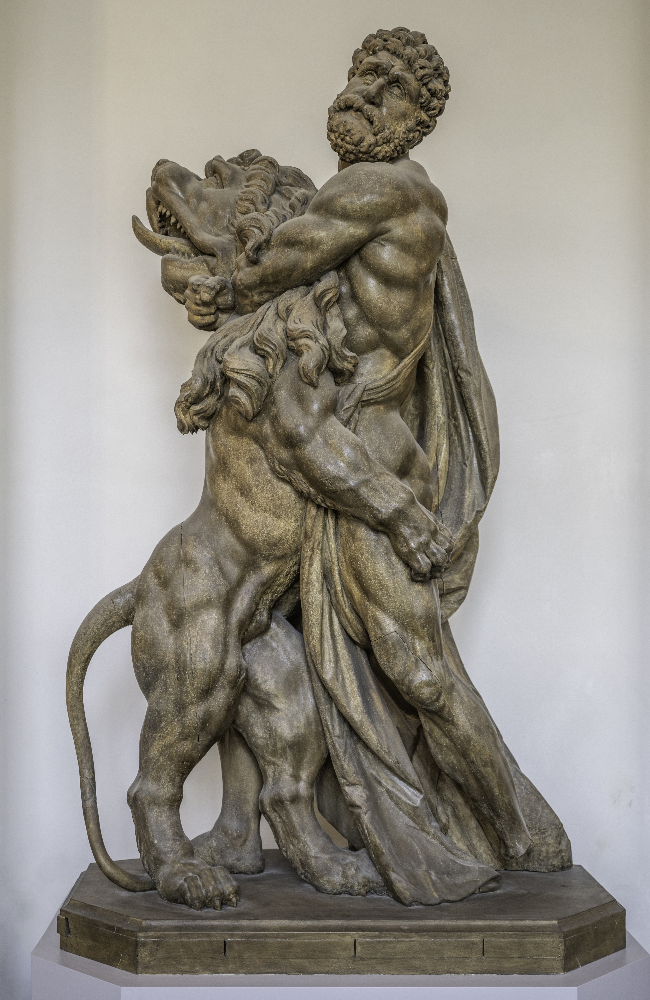

Statue by Roman Anton Boos, photo dedicated to public domain.
I named her Nemea (Νεμέα) or Nimi, for short, after the mythological region of Nemea, the location and namesake of the Nemean Lion, Hercules’s first labor (as assigned by Hera). The actual myth itself bears little resemblance to Nimi's behavior, and I try not to think too hard about how I named her after a creature that’s main plot point is it gets killed off.
The original myth, depressing as it is, has many retellings, such as in the 2025 novel by John Wiswell, Wearing the Lion, which attempts to redeem and humanize Hercules. In it, instead of going on a rampage for his 12 labors, he befriends and helps creatures throughout Greece. Instead of wearing the Nemean Lion’s pelt, he carries it when it doesn’t feel well. It’s honestly pretty heartwarming.
Another way that Nimi and I rewrite the herculean origins of her name is through her toys, which I assign greek namesakes like her. The stuffed version of Hercules makes out much worse than the myth. He currently does not have a head, and Nimi is working hard at removing his limbs.
Nimi and I differ, though, when it comes to learning from history. In the original myth, the Nemean Lion has invincible skin and is terrorizing the Greek countryfolk because they are unable to stop it. I often feel like Nimi is purposefully invoking the idea that her exterior is impervious while her interior is not – she has been to the emergency vet with pet poison control on the line far too many times when we have disagreed on what constitutes a “snack.”
| Food Nimi Eats | Food Nimi Doesn’t Eat | “Food” Nimi Shouldn’t Eat |
|---|---|---|
| Cucumbers | Bananas | Magnets |
| Watermelon | Chocolate (thankfully) | Used cigarettes |
| Shower water | Lettuce | Glass on the sidewalk |
| Salmon | Kale | An entire container of fiber treats |